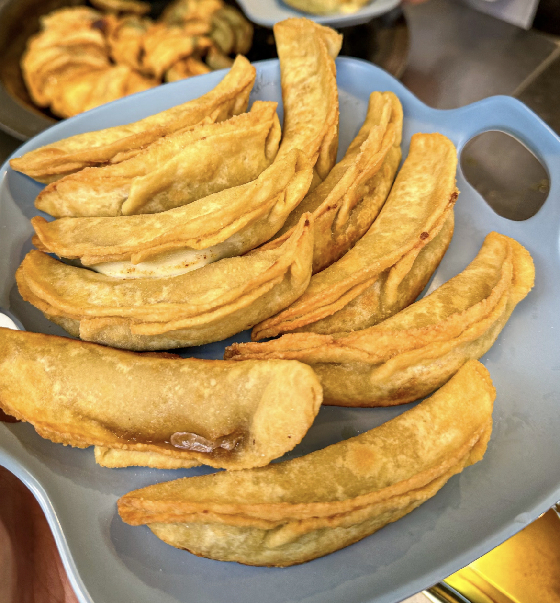

Nanjing Salt Water Duck
One of the most famous speciality products of Nanjing, the meat is delicious, salty and moderately flavourful.
Duck Blood Vermicelli Soup
Nanjing popular snacks, soup fresh and tasty, warm and nourishing.

Beef Potstickers
Crispy on the outside, tender on the inside, and full of filling, it is Nanjing people's favourite breakfast.
Food Street Recommended
Fuzi Temple Food Street
Gathering all kinds of Nanjing speciality snacks, it is the first choice place to taste authentic cuisine.
Lion Bridge Food Street
Hundred years old street, all kinds of famous snacks gathered, is the most popular food street in Nanjing.